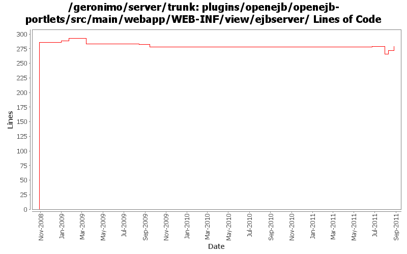

[root]/plugins/openejb/openejb-portlets/src/main/webapp/WEB-INF/view/ejbserver

| Author | Changes | Lines of Code | Lines per Change |
|---|---|---|---|
| Totals | 13 (100.0%) | 458 (100.0%) | 35.2 |
| manugeorge | 3 (23.1%) | 297 (64.8%) | 99.0 |
| rwonly | 4 (30.8%) | 97 (21.2%) | 24.2 |
| xuhaihong | 2 (15.4%) | 49 (10.7%) | 24.5 |
| dwoods | 3 (23.1%) | 8 (1.7%) | 2.6 |
| genspring | 1 (7.7%) | 7 (1.5%) | 7.0 |
GERONIMO-6125 The dojo tree should consider a tree entry which has no child as a leaf node.
8 lines of code changed in 1 file:
GERONIMO-6103 EJB Server and JNDI Viewer are not displayed correctly on Chrome (Thanks Shenghao Fang for the patch!)
45 lines of code changed in 1 file:
GERONIMO-6059 New look and feel of Geronimo 3.0 admin console (Step 1)
31 lines of code changed in 1 file:
GERONIMO-5674 Dojo related improvement. Patch from Xiao Yi to replace the full dojo with a customized dojo.
1, DojoHowToCompress/**/* files are the build script to build geronimo customized dojo.
2, dojo/**/* files are the customized dojo files for geronimo.
3, dojo-tomcat and dojo-jetty modules are removed.
4, customized dojo files are put into console-portal-driver webapp so that other jsp can reference the dojo
files with /console/dojo/xxx
5, also updated all dojo references in all jsps to the new dojo location.
7 lines of code changed in 1 file:
GERONIMO-4790 Migrate debug-views code to base on the up-to-date dojo: Sub-task 3
13 lines of code changed in 1 file:
GERONIMO-4746 OpenEJB portlet page crushes. (Patch from Siqi Du)
4 lines of code changed in 1 file:
GERONIMO-4517 Apply unified message display style(G-4484) to javascript alert messages. Together with the localization of these messages. Thanks for the patch, Gang Yin
45 lines of code changed in 1 file:
GERONIMO-4509 Two EJB server portlet issues: Fixes the issue with rechanging back config properties
11 lines of code changed in 1 file:
GERONIMO-4474 Pull out the text in the JSP files to resource bundle files. Applied jsp-localization-fix.patch from Gang Yin.
1 lines of code changed in 1 file:
GERONIMO-4474 Pull out the text in the JSP files to resource bundle files. Patches provided by Gang Yin.
4 lines of code changed in 1 file:
GERONIMO-4472 Incorrect Dojo link path in OpenEJB portlet. Thanks Ivan for the patch.
3 lines of code changed in 1 file:
Merging patch for GERONIMO-3811 EjbServer Portlet.
286 lines of code changed in 2 files: